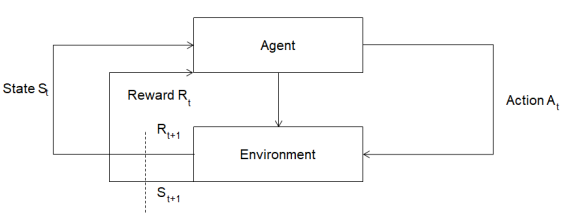

Whitepaper
1. Våra Ledande Principer
Vårt primära mål är tydligt: att generera avkastning för våra kunder utan att förbruka deras värdefulla tid. Våra nuvarande och framtida erbjudanden är grundade på tre grundläggande principer:
1. Effektivitet
För att kunna leverera betydande avkastning säkerställer vi att vår automatiseringsteknik för kryptovalutahandel förblir synkroniserad med marknadens dynamik. Vi testar och integrerar konsekvent framgångsrika handelsstrategier i vår artificiella intelligensmodell. Alla våra strategier är fast förankrade i empirisk och akademisk forskning.
2. Genomskinlighet
Kunder har obegränsad tillgång till information om förvaltningen av sina medel. Detaljer om transaktioner, provisioner, vinster och saldon är lättillgängliga via ditt personliga &Volume-konto såväl som ditt utbyteskonto. Vår tjänsteprissättning är transparent, beroende av insättningsvolym och utan dolda avgifter. Eventuella mindre ändringar i användarvillkoren meddelas i god tid i förväg. &Volume är utformad för att minimera och lösa eventuella intressekonflikter som kan uppstå mellan oss, våra kunder och börser.
3. Säkerhet
Kundmedel hålls säkert på deras utbyteskonton och är alltid tillgängliga. Vi följer strikt principen att inte vara involverad i uttag eller överföring av dessa medel. Denna princip styr även vår utveckling av nya produkter för traditionella aktie- och valutamarknader.
Vi samlar varken in eller behåller personlig information. Vår användning av analysverktyg, såsom Google Analytics, är enbart för anonym analys av användaraktivitet. Dessa data hjälper oss att förbättra användargränssnittet och säkerställa en användarvänlig upplevelse på både webbplatsen och i &Volume's personliga konto.
2. Metodik
I detta avsnitt fördjupar vi oss i de grundläggande begreppen inom artificiell intelligens, som utgör den tekniska grundvalen för &Volume. Vi utvärderar även dess effektivitet och kapacitet.
Begreppet artificiell intelligens (AI) omfattar ansträngningar att utveckla algoritmer som kan efterlikna mänskliga handlingar (Winston, 1984). AI kan materialiseras som programvara som fungerar på datorer, servrar eller integreras i chips i smartphones, bilar och hushållsapparater. Som ett resultat kan varje algoritm där en handling följer av en annan tolkas som ett exempel på artificiell intelligens.
Forskare kategoriserar AI i tre huvudgrupper: svag (Narrow AI), stark (General AI) och superintelligens (Super AI) (Patel et al., 2020). För närvarande klassificeras alla existerande former av AI, inklusive röstassistenter och text- och bildgenererande modeller som GPT-4 och Midjourney, som svag AI.
Skillnaden mellan svag och stark AI ligger i den senares självmedvetenhet och närhet till mänsklig intelligens (Turing, 1950).
Trots detta betraktar vissa forskare införandet av AI genom djup maskininlärning som en avgörande steg mot att uppnå stark AI (Daudov et al., 2020).
Neurala nätverk, som utgör en delmängd av artificiell intelligens, är en maskininlärningsteknik som efterliknar den mänskliga hjärnans arkitektur för bearbetning av komplex data. De består av många sammanlänkade neuroner och är involverade i bearbetning och överföring av information mellan sig. Varje neuron tar emot input, bearbetar den och skickar resultatet vidare till nästa neuron (Picton och Picton, 1994).
Det finns flera typer av neurala nätverk, inklusive framåt-, återkopplande och konvolutionella (Tkáč och Verner, 2016). Varje typ har sina unika egenskaper och används beroende på den specifika uppgiften.
Neurala nätverk kan användas för att automatisera uppgifter som tal- och bildigenkänning, naturlig språkbehandling och prediktiv modellering. De kan tränas på omfattande datamängder för uppgifter som klassificering, klustring och förutsägelse. Inom beslutsfattande sammanhang, inklusive finansmarknader, bygger maskininlärningsalgoritmer på data som härstammar från neurala nätverk, som kan lära sig självständigt eller under övervakning.
2.1 Grunden för AI-modellen
På &Volume använder vi huvudsakligen en kombination av verktyg som består av ett datainsamlingssystem, en rad neurala nätverk för databehandling och ett algoritmiskt beslutssystem baserat på maskininlärning.
Datainsamlingssystemet samlar in information från olika källor och dirigerar den sedan till de neurala nätverken för bearbetning. Därefter skickas den behandlade informationen till beslutssystemet för tolkning. Därifrån bestämmer systemet om en transaktion ska initieras, vilken position som ska väljas och när det optimala säljögonblicket är.
Figur 1 illustrerar den övergripande modellen som &Volume använder för att förutsäga handels lönsamhet. Det första steget innebär att samla in all nödvändig data för att träna och utvärdera den förutsägande modellen. Denna data kan sedan genomgå bearbetning, omvandling eller rening för att eliminera oönskat brus och behålla bara relevant information. Den bearbetade datan används sedan för att träna modellen. I valideringsfasen genomgår hyperparameteroptimering. Slutligen går den finjusterade modellen igenom en testfas för att bedöma resultaten.
Figur 1. Allmän AI-modell för &Volume (2023).
För handelsbeslut förlitar sig &Volume på maskininlärningsalgoritmer som övervakas av en mentor, tillsammans med algoritmer som har en klassisk förstärkningsinlärningscykel (se Figur 2). I mentorstyrda algoritmer intar ML-programmerare och experter med erfarenhet av både aktie- och kryptomarknadshandel rollen som mentor. De utvärderar systemets beslutsfattande och korrigerar vid behov.
Figur 2. Modell för klassisk förstärkningsinlärningscykel (2023).
Därför har vår AI-modell en hybridkaraktär, där olika komponenter kombineras till ett enhetligt system. Hybrid-AI-modeller, som beskrivs av Nazari et al. (2022), erbjuder fördelar jämfört med homogena varianter genom att integrera olika maskininlärningstekniker. Varje individuell modell inom hybridramverket stärker det övergripande systemets prestanda.
Denna hybrida AI-modell förutspår skickligt dagliga pristrender och utför lönsamma transaktioner inom en 24-timmars tidsram (Patel et al., 2020). Trots det leder transaktioner över en längre handelsdagshorisont till ökad lönsamhet. Därför fokuserar vår primära strategi för närvarande på dagshandel för att hantera finanserna, snarare än på medellång till lång sikt.
Under längre perioder, som en vecka, minskar modellens effektivitet märkbart, tillsammans med dess lönsamhetskvot (Patel et al., 2020).
En avgörande fördel med en AI-modell ligger i dess förmåga att agera utan påverkan från känslor. Även skickliga handlare kan ställas inför betydande förluster på grund av impulshandlingar drivna av känslor som inte kan kontrolleras (Astor et al., 2015). Känslor kan leda till oöverlagda beslut. Noggrann planering och disciplinerad strategi kan fungera som skydd mot detta, och AI minskar risken för känslomässigt påverkade beslut och förhindrar därmed stora förluster.
Detaljerade jämförande testdata över olika tidsramar i relation till alternativa investeringsinstrument beskrivs i följande avsnitt.
2.2 Grundläggande handelstekniker
Tidigare har vi diskuterat det grundläggande operativa ramverket för vår AI-modell. Låt oss nu fördjupa oss i de specifika metoder som används på &Volume, särskilt inom dagshandel.
Handelsutbud
Handelsintervall, även känt som medelåtergång, bygger på idén att priserna tenderar att återgå till sitt genomsnitt (Wang et al, 2016). Vår metod bygger på den strategi som beskrivs i det vetenskapliga arbetet av Leoung & Lee (2015). Vi identifierar situationer där priset på en tillgång avviker betydligt från sitt historiska genomsnitt, oftast på grund av överköp eller översäljning. Därefter initierar vi affärer med förväntan om att priset inom en given tidsram kommer att återgå till sitt genomsnitt från tidigare cykler.
För att implementera medelåtergångsstrategin använder vi klassiska tekniska indikatorer som glidande medelvärden och Bollinger Bands (Bollinger, 1992), tillsammans med andra komplexa faktorer. Glidande medelvärden mäter en tillgångs historiska prismedelvärde, medan Bollinger Bands, som utnyttjar volatilitetsmått som standardavvikelse, hjälper till att identifiera betydande avvikelser från det genomsnittliga marknadsvärdet (Bollinger, 2002). För att effektivt använda denna strategi fann vi det avgörande att anpassa och förbättra AI-modellen med mer sofistikerade villkor, eftersom ett överdrivet förlitande på tekniska indikatorer skulle leda till minskad lönsamhet vid handel med kryptopar.
Medelåtergångsstrategin kan appliceras över olika tidsramar, inklusive långsiktiga (Bollinger, 2002). Dock använder vi på &Volume denna strategi enbart för kortsiktig intradagshandel på grund av specifika faktorer och begränsningar som är karakteristiska för kryptobörser. Hos oss grundar sig denna strategi på statistisk analys och identifiering av onormala prisrörelser. När en prisavvikelse upptäcks genererar AI-systemet signaler för att initiera affärer i motsatt riktning av avvikelsen (se Figur 3).
Figur 3. Illustration av initiering och avslutning av en säljtransaktion med hjälp av medelåtergångsstrategin inom en 30-minuters tidsram (2023).
I genomsnittliga återgångsaffärer bedömer vår AI sannolikheten för en prisomvändning och fastställer lämpliga stop-loss-nivåer för att minimera eventuella förluster om medelåtergången inte realiseras. Vår AI-modell integrerar statistisk analys, riskhanteringsmetoder och kontinuerlig övervakning av marknadsdynamiken.
Volymvägt genomsnittspris (VWAP).
Den volymvägda medelprisstrategin innebär att bryta ner en betydande order och strategiskt placera ut mindre segment på marknaden baserat på historiska volymprofiler för specifika positioner. Målet är att utföra ordern i närheten av det volymvägda genomsnittspriset (VWAP) som bestäms av en allmän (se Figur 4) eller specialiserad formel.
Figur 4. Allmän formel för beräkning av priser baserat på vägd genomsnittlig volym (2023).
Tidsvägt genomsnittspris (TWAP)
Med den tidsvägda medelprisstrategin delar vi upp stora affärer i intervall och skickar mindre, AI-bestämda ordersegment till marknaden med jämnt fördelade tidsintervall mellan start- och slutdatum. Vårt mål är att fylla ordern till det genomsnittliga priset mellan dessa tidsgränser och därigenom minimera marknadseffekten av att ange stora volymer på en marknad med begränsad handelsvolym.
Volymprocent (POV)
Tills handelsordern är helt ifylld, skickar vårt AI-system kontinuerligt delordrar baserat på den definierade deltagandegraden och marknadsvolymen. Denna volymprocentstrategi, även känd som en stegstrategi, innebär att vårt AI-system lägger beställningar till en automatiskt bestämd procentandel av marknadsvolymerna. När priset på kryptovalutan når en förutbestämd nivå, justerar AI denna deltagandenivå därefter.
Utöver dessa metoder inkluderar vi flera andra algoritmiska strategier med det övergripande syftet att identifiera andra marknadsaktörers agerande. Dessa algoritmer inom vår AI-modell möjliggör för oss att skilja åtgärderna hos system som liknar våra, antingen på köp- eller säljsidan av en stor order. Denna distinktion hjälper oss att identifiera möjligheter som rör stora order, vilket möjliggör för oss att utföra order till ett mer fördelaktigt pris. Sådana manövrar kallas för AI-utveckling (Hens et al., 2018). Vi följer noggrant regler och föreskrifter som fastställts av Financial Industry Regulatory Authority (FINRA), med medvetenhet om att framtida åtgärder kan bli föremål för juridisk granskning beroende på omständigheterna och är strikt reglerade (FINRA, 2013; FINMA, 2023; FCA, 2023, ESMA, 2023).
2.3 Risk management
Vid handel:
Applikationen &Volume använder en kombination av tekniker eftersom, i de flesta fall, att enbart förlita sig på ett enda tillvägagångssätt kanske inte ger en lönsam handel. Beroende på marknadsförhållandena anpassar AI snabbt sitt tillvägagångssätt på millisekunder. Även när en strategi implementeras kompetent vid rätt tidpunkt, garanterar den inte frånvaron av olönsamma transaktioner. För att minska förlusterna utvärderar vi kontinuerligt olika strategier med hjälp av historiska data.
Dessutom är vårt "Barn"-system i drift för första gången. Den övervakar noggrant alla transaktioner och upprätthåller en händelselogg. I händelse av en nödsituation meddelar systemet användaren omedelbart. Samtidigt får vår AI-systemsupportspecialist en dokumenterad redogörelse för situationen, ger svar i realtid och tillhandahåller data för vidare analys för att underlätta systemförbättringar.
I relation till ditt personliga konto:
Vi ber användare att tillhandahålla API-nycklar för åtkomst till sina utbyteskonton med begränsade behörigheter, vilket förhindrar konvertering eller uttag av pengar. Följaktligen, om en användare självständigt tappar bort sin nyckel, och risksystemet inte är fel, minimeras de efterföljande konsekvenserna.
API-nycklar lagras säkert i ett isolerat valv, endast tillgängligt för &Volums säkerhetsansvarig. Åtkomstprotokoll är föremål för strikta ändringar under varje godkänd cykel, i enlighet med interna säkerhetsprotokoll.
Trots att API-nycklar inte är av betydande intresse för potentiella angripare, eftersom de inte ger möjlighet att överföra pengar, genomför vi noggranna ljudpenetrationstester.
Vid behov kan specifika riktlinjer för säker lagring av API-nycklar tillhandahållas på begäran via vårt feedbackformulär.
Vi samlar inte in eller behåller personliga användaruppgifter.
3. Lönsamhet
Grunden bakom att fokusera tjänsten på handel med kryptovalutapar ligger i vår övertygelse att detta utgör en av de mest effektiva områdena för ekonomisk förvaltning. När man väger risk mot avkastning verkar handel med kryptovalutor, med vissa varningar, mer tilltalande jämfört med konventionella investeringsinstrument som bankinlåning, sparkonton, förvaltning av förtroende och liknande.
För att mäta riktmärkets effektivitet, låt oss fördjupa oss i handelsstatistik med ett månadslångt exempel (Figur 5).
Figur 5. Diagram som visar handelsaktivitet och kontosaldo under loppet av en kalendermånad (2023).
Den vertikala axeln representerar kontosaldot, medan den horisontella axeln anger antalet transaktioner. Från och med ett stabilt myntsaldo på 100 USD, motsvarande 100 USD, genomförde vårt system totalt 681 affärer under månaden. Av dessa gav 299 avslut förlust medan 382 var lönsamma. Det mest negativa resultatet uppgick till -6,91 USD, medan det mest gynnsamma resultatet var +3,3 USD. Under hela månaden uppvisade saldot en ojämn tillväxt, avbruten av intermittenta uttag. Dessa neddragningar är en konsekvens av de särdrag som är inneboende i vår handelsstrategi och AI-modellens funktion. Den ackumulerade vikten av lönsamma affärer ökade gradvis lönsamheten, vilket kulminerade i ett saldo i slutet av månaden på $152,02, eller en ökning med 52%. Under ett intervall på upp till 12 månader uppgår den genomsnittliga effektiviteten till ~360 % årligen.
Detta mått valdes som ett riktmärke för jämförande bedömning mot traditionella investeringsinstrument.
3.1 Jämförelse med brittiska banker

I Storbritannien varierar den genomsnittliga räntan för inlåning vanligtvis från 1 % till 5 % per år. De flesta alternativ medför dock inte månatliga räntor, vilket innebär att det inte finns någon sammansättning och betalningar tillhandahålls först i slutet av löptiden. De mest förmånliga räntorna erbjuds vanligtvis på fasta insättningar som inte tillåter partiella uttag eller ytterligare insättningar. Denna typ av investering kräver inte tidigare erfarenhet, och alla insättningar skyddas av regeringens FSCS-system, vilket ger täckning upp till £85 000 (FSCS, 2023). Följaktligen är risken för investeringsförlust mycket låg, vilket gör den lämplig för att säkra betydande sparande på lång sikt.
Ändå är denna investeringsform mottaglig för en hög risk för förluster på grund av inflation. Till exempel, 2022, upplevde insättare betydande monetära förluster, med Storbritanniens inflation som nådde 11 % (NY Times, 2022). Denna siffra är mer än dubbelt så hög ränta som erbjuds på en insättning.
3.2 Jämförelse med EU-banker

I europeiska länder (EU plus Schweiz) varierar den genomsnittliga räntan för inlåning vanligtvis från 0,1 % till 4 %. I de flesta fall höjs räntan månadsvis, och det finns ett alternativ för kapitalisering. Det är värt att notera att inom EU finns det för närvarande inte ett enhetligt insättningsförsäkringssystem; varje land har sin egen politik. Till exempel i Tyskland försäkrar staten insättningar upp till 100 000 euro under DSGV-systemet (Europa, 2023). I likhet med andra investeringsformer är denna typ också känslig för en hög risk för förlust på grund av inflation. Till exempel, 2022 var inflationen i europeiska länder på 9 % (Inflation Tool, 2023). År 2023 förväntas den vara 5 % (Inflation Tool, 2023).
3.3 Jämförelse med amerikanska banker

I det nuvarande ekonomiska klimatet sträcker sig räntorna på inlåning i amerikanska banker vanligtvis från 0,1 % till 5 %. Noterbart är att 2023 uppmuntrar de flesta amerikanska banker inte invånarna att sätta in pengar, eftersom de erbjuder räntor som är avsevärt lägre än inflationstakten. Det är viktigt att betona att alla insättningar upp till 250 000 USD i amerikanska banker är försäkrade av den statliga myndigheten FDIC (FDIC, 2023).
2022 översteg inflationen i USA 8 %, vilket resulterade i en devalvering av inlåningen (Statista, 2023).
3.3 Jämförelse med japanska banker

I Japan ligger den genomsnittliga bankräntan vanligtvis runt 0,001 %, med ytterst sällsynta undantag där den kan fluktuera runt 1 %. Noterbart är att 2022 nådde inflationen i Japan rekordhöga 2,5 % (Inflation Tool, 2023).
3.5 Jämförelse med ryska banker

I Ryssland var den genomsnittliga årliga inflationstakten för 2022 cirka 12 %, och vissa månader steg den så högt som 17 % (CBR, 2023). Samtidigt sträcker sig den genomsnittliga bankinlåningsräntan från 6 % till 12 % per år, vanligtvis med aktivering av beloppet och månatliga ränteutbetalningar. I grund och botten har inlåning potential att mildra riskerna förknippade med inflation.
3.6 Jämförelse med Neobanks

Majoriteten av neobanker erbjuder flexibla villkor. Till exempel, när du använder Revolut och Wise, kan ditt kontosaldo samlas på ränta dagligen med en ränta på 4% till 5% per år. I de flesta fall övervakar en investeringsfond dessa fonder. Till exempel, i Wise, Revolut och Monzo, förvaltar BlackRock fonderna, som är investerade i en mängd olika tillgångar inklusive fonder, obligationer och aktier.
Det är viktigt att notera att det inte finns någon avsättning för fondförsäkring, vilket innebär att investeringar bär hela risken, om än med en relativt låg ränta per år.
3.7 Jämförelse med investeringsfonder

Att investera i investeringsfonder ger betydligt högre avkastning jämfört med bankinlåning. Den genomsnittliga avkastningen på fonder 2022 varierade från 8 % till 25 %. Det är dock viktigt att notera att dessa fonder inte är försäkrade, så risken för förlust förblir en påtaglig möjlighet. Att engagera sig i investeringar kräver viss kunskap och erfarenhet av marknadshandel och global ekonomi.
Inga periodiska betalningar görs under hela året; Fondens värden fluktuerar beroende på rådande marknadsförhållanden.
3.8 Slutsats om lönsamhet
Banker
Att investera i banktillgodohavanden är det minst riskfyllda sättet att spara pengar och kräver inga ytterligare kunskaper. I de flesta länder är insättningar upp till ett visst belopp försäkrade av staten vid bankkonkurs. Men med tanke på inflationen bevarar denna metod i bästa fall beloppet eller ådrar sig en liten förlust, beroende på inflationsnivån under en given period. Vanligtvis är medel i insättningen inte lättillgängliga, och för tidig stängning kan leda till omräkning av räntesatser till en lägsta ränta.
Neobanks
Att använda neobanker som ett investeringsverktyg kan ge bankräntor eller något högre. I de flesta fall är medel tillgängliga, och ränta tillfaller dagligen eller månadsvis. Inga specialkunskaper behövs. Det är dock viktigt att notera att fonder inte är försäkrade, vilket innebär en risk för investeringsförlust.
Investeringsfonder
Investeringsfonder fördelar vanligtvis kundernas kapital baserat på risknivån, till fonder, obligationer, index och aktier. I genomsnitt överstiger avkastningen på sådana investeringar bankräntor. Denna typ av investeringar kräver dock en gedigen förståelse för marknadsdynamiken och den bredare ekonomin. Fonder är inte försäkrade och risken för investeringsförlust varierar från måttlig till hög.
&Volume
Genom att använda den mest riskfyllda formen av investeringsförvaltning - dagshandel med kryptovaluta - &Volume ger kunderna full kontroll över sin insättning. Transaktioner utförs dygnet runt, med resultat synliga dagligen. Risken för förluster är cyklisk, generellt högre än med investeringsfonder och helt beroende av marknadsförhållandena. Inga specialkunskaper krävs. Trots den förhöjda risken överstiger avkastningen från sådana investeringar vida bankräntor på inlåning och överstiger avsevärt avkastningen från investeringsfonder.
4. Rekommendationer och riskvarning
Rekommendationer
-
När du fattar investeringsbeslut rekommenderar vi att du noggrant överväger alla faktorer och förstår ditt investeringsmål.
-
De flesta experter rekommenderar att du inte investerar allt ditt sparande i ett instrument, utan att dela upp ditt sparande i flera instrument så att de flesta av fonderna är mest tillförlitligt skyddade (SEC, 2023).
-
Att sprida dina pengar på olika typer av investeringar, såsom internationella aktier och obligationer, kan minska dina risker. I en ordentligt diversifierad blandning av investeringar, om någon viss investering eller marknad presterar dåligt, kan resultatet för andra investeringar hjälpa till att upprätthålla den totala avkastningen och mildra effekterna av förluster (FCA, 2023).
Nyckelvillkor för ekonomisk framgång enligt SEC:
Gör en ekonomisk plan. Betala av alla höga ränteskulder. Börja spara och investera så fort du betalar av dina skulder.
Innan du bestämmer dig för att använda något investeringsinstrument rekommenderar vi att du bekantar dig med två användbara källor:
Riskvarning
&Volume är ett investeringsinstrument med ökad risk.
Investeringar innebär alltid risk. Ditt kapital kan öka eller minska, och du kanske inte alltid kan få tillbaka hela beloppet du investerar. Tidigare resultat är ingen garanti för framtida resultat.
Du kan förlora alla pengar du investerar
-
Tillståndet för de flesta kryptotillgångar kan vara mycket instabilt: deras värde faller lika snabbt som det stiger. Du bör vara beredd att förlora alla pengar du investerar i kryptotillgångar och handel med kryptovaluta.
-
Marknaden för kryptotillgångar är praktiskt taget oreglerad. Det finns en risk att förlora pengar eller eventuella köpta kryptotillgångar på grund av risker som cyberattacker, ekonomiska brott och bytesmisslyckande.
-
Räkna inte med att dina pengar är försäkrade om något går fel. Handel med kryptovalutor och kryptovalutor är inte en reglerad verksamhet och är inte försäkrad av någon regering.
-
Lägg inte alla dina ägg i en korg. Att lägga alla dina pengar på en typ av investering är riskabelt. Att sprida dina pengar på olika investeringar gör dig mindre beroende av vilken som kommer att gå bra.
Projektets färdplan
Den ursprungliga idén med projektet var att tillhandahålla automatiserade handelstjänster på traditionella aktie- och valutamarknader. Inträdet på den traditionella marknaden är dock blockerat av ett starkt regulatoriskt hinder, vilket kräver enorma initiala investeringar för att övervinna. Därför började vi utvecklingen av projektet från kryptovalutamarknaden, eftersom det är mindre reglerat och öppet för experiment.
-
Projektstartsfas
I det första skedet lanserade vi huvudtjänsten - automatiserad hantering av handel med kryptopar. För närvarande är detta vår primära produkt, med mycket låga inträdesbarriärer. Efter belastningstestning på en begränsad publik på upp till 5 000 personer kommer projektet att lanseras för en bredare publik. -
Aktivera Pro Mode
Inledningsvis tillhandahålls inga användarinställningar för vårt system. Men i det andra steget kommer vi att ge åtkomst till vissa inställningar. För att ändra systeminställningar utan att kompromissa med effektiviteten måste användaren ha viss kunskap inom handel. Vi kommer också att utöka antalet kryptoutbyten som stöds. För användare som handlar med kryptovaluta på egen hand förbereder vi att släppa vår egen handelsterminal med inbyggd anslutning till vårt AI-system. -
Expansion av investeringsmetoder
Utöver automatiserad handel planerar vi att lägga till verktyg för långsiktig investering i krypto, automatiserat köp av kryptotillgångar i långsiktigt läge, samt automatiserad balansering av investeringsportföljen. För att hantera balanseringen av kryptoportföljer på medellång och lång sikt, utvecklar vi ett automatiserat sentimentanalyssystem baserat på öppna språkmodeller. -
Algoritmisk handel på aktie- och valutamarknaderna:
Vi planerar att samla tillräckligt med likviditet för att självständigt eller genom en paraplymäklare börja tillhandahålla automatiserade handelstjänster för kort-, medellång- och långsiktiga investeringar.
Sammanfattning
&Volume utvecklar effektiva investeringsförvaltningsmetoder och erbjuder en produkt som hjälper användare att maximera sina vinster, med hänsyn till deras individuella mål, ekonomiska situation och risktolerans.
Vi har en tydlig vision om hur vi ska vidareutveckla vår produkt och i vilken riktning.
Referenser:
-
Alan, M. (1950). Turing. Computing machinery and intelligence. Mind, 59(236).
-
Astor, P. J., Hariharan, A., Adam, M. T., & Weinhardt, C. (2015). Emotion regulation and behavior in an individual decision trading experiment: Insights from psychophysiology. Journal of Neuroscience, Psychology, and Economics, 8(3), 186.
-
Amirzadeh, R., Nazari, A., & Thiruvady, D. (2022). Applying Artificial Intelligence in Cryptocurrency Markets: A Survey. Algorithms, 15(11), 428.
-
Avetisyan, B. R., Druzhinina, N. S., & Daudov, I. M. (2020, July). Neural networks and artificial intelligence as trends for the development of the future. In Journal of Physics: Conference Series (Vol. 1582, No. 1, p. 012005). IOP Publishing.
-
Bollinger, J. (1992). Using bollinger bands. Stocks & Commodities, 10(2), 47-51.
-
Bollinger, J. (2002). Bollinger on Bollinger bands (p. 0). New York: McGraw-Hill.Hens, T., Lensberg, T., & Schenk‐Hoppé, K. R. (2018). Front‐Running and Market Quality: An Evolutionary Perspective on High Frequency Trading. International Review of Finance, 18(4), 727-741.
-
Leung, T. S. T., & Li, X. (2015). Optimal mean reversion trading: Mathematical analysis and practical applications (Vol. 1). World Scientific.
-
Picton, P., & Picton, P. (1994). What is a neural network? (pp. 1-12). Macmillan Education UK.
-
Patel, K. N., Raina, S., & Gupta, S. (2020). Artificial intelligence and its models. J. Appl. Sci. Computat, 7(2), 95-97.
-
Patel, M.M.; Tanwar, S.; Gupta, R.; Kumar, N. A Deep Learning-based Cryptocurrency Price Prediction Scheme for Financial Institutions. J. Inf. Secur. Appl. 2020, 55, 102583.
-
Wang, Z., Li, J., Li, X., & Leung, T. (2016). Speculative futures trading under mean reversion. Asia-Pacific Financial Markets, 23, 281-304.
-
Winston, P. H. (1984). Artificial intelligence. Addison-Wesley Longman Publishing Co., Inc.